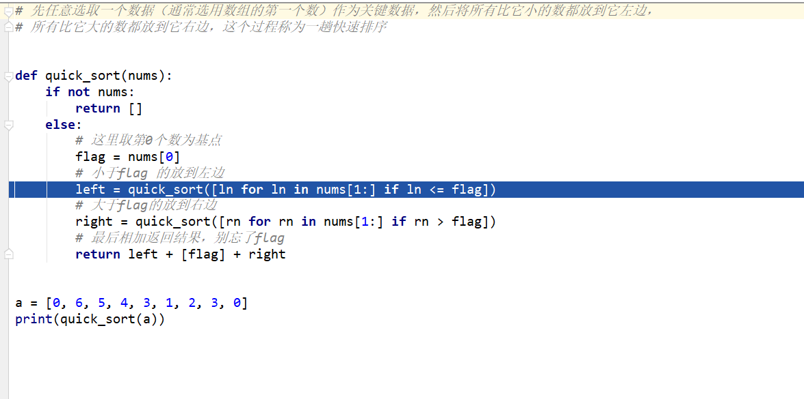

1 def quick_sort(nums):
2 if not nums:
3 return []
4 else:
5 # 这里取第0个数为基点
6 flag = nums[0]
7 # 小于flag 的放到左边
8 left = quick_sort([ln for ln in nums[1:] if ln <= flag])
9 # 大于flag的放到右边
10 right = quick_sort([rn for rn in nums[1:] if rn > flag])
11 # 最后相加返回结果，别忘了flag
12 return left + [flag] + right
13
14
15 a = [0, 6, 5, 4, 3, 1, 2, 3, 0]
16 print(quick_sort(a))先任意选取一个数据（通常选用数组的第一个数）作为关键数据，然后将所有比它小的数都放到它左边， 所有比它大的数都放到它右边，这个过程称为一趟快速排序
